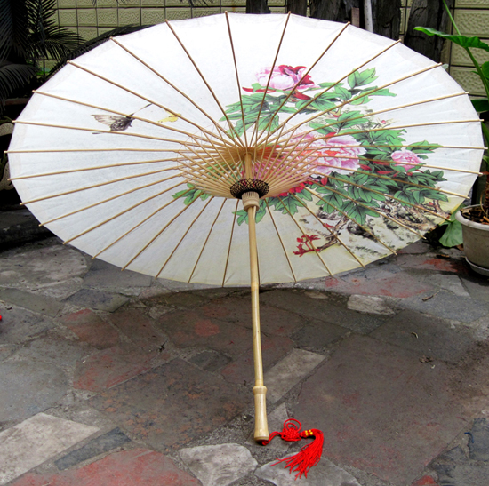
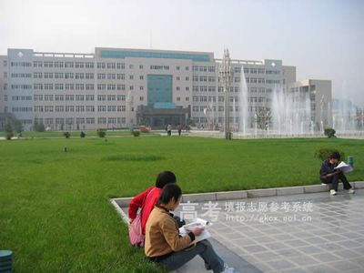

- 

- 网名：半夏微凉$不言殇
- 姓名：徐紫琪
- 籍贯：甘肃省定西市
- 现居：天水市秦州区
- 职业：学生
- 爱好：骑车兜风，旅行，学习
- 喜欢的歌：《半壶纱》《芙蓉雨》《渡风》《忘尘谷》
我的简介一路走来慢生活文章推荐
Just about me
徐紫琪，女，95年来到了这个喝酸奶不舔盖的大天朝。 好了，不吐槽了简单的介绍下自己;接触计算器之前是在学校，当时高中去网吧，就想的去破解网吧的计费程序（好吧虽然没有少挨了揍）去学习了很多一些乱七八糟的code 虽然当时不知道是干嘛用的，但是知道能上网不花钱！然后慢慢的就对电脑上的一些兴趣就逐步了解了起来。。。。 当时下学第一件事，去了家影楼做学徒，然后学习了PS 绘声绘影等视频图片编辑处理软件。然后辞职，去花钱到培训学习、遇到了我生命中的一次大的转折.老王 我的计算机老师，当时学的是php+mysql 基础入门 写个留言板增删查改的。现在php dede 帝国 dz dz destoon 都已经入门 准备进阶.... 不知道程序员是不是晚上的活动的一个团体。习惯于-晚上一个人独自窝在电脑旁。敲打着一行又一行的code 听着音响里面缓慢传出的音乐 直至深夜..........About my blog
一路走来
经历了激烈的高考，我来到美丽的城市---天水，进入大学，刚开始有些许迷茫，在班主任的带领下，努力学习网页前端知识，C语言要学到什么程度呢？越熟当然越好，不熟的话也要具备基本技能。比如写一个数组排序、输入数字求和什么的。学C语言唯一的方法是多写程序多练习，编译出错没关系，自己去解决；执行出错没关系，自己去分析。以前我是用VC来练习C语言的，经常去尝试着写一些C语言竞赛的题目。它们是纯C、纯数学、纯逻辑的题目，不涉及界面这些东西，很适合煅炼你的编程能力。回到主题，首先我们要明白你的目的是什么，大概来说所谓嵌入式Linux可以分为两部分：底层系统、应用开发。如果你是想做应用开发，那么你去把C语言、数据结构、JAVA什么的学好吧。嵌入式应用开发和PC上的应用开发并没有什么特别要注意的。也许你说在嵌入式上要做些优化，是的，要优化，但是未经优化的程序和PC上的程序开发没什么差别。另外，当你有能力去优化时，你已经不用来问这个问题了。具体到某个例子，比如说开发界面，在PC上我们用VC；在嵌入式Linux里也许我们用QT也许用Android，这个时候你应该去学学QT、Android的编程。但是基础还是C或JAVA，在此基础上去熟悉它们的接口。你学过VC的话，也是要花时间去了解那些类、控件的。
慢生活
经历了激烈的高考，我来到美丽的城市---天水，进入大学，刚开始有些许迷茫，在班主任的带领下，努力学习网页前端知识，C语言要学到什么程度呢？越熟当然越好，不熟的话也要具备基本技能。比如写一个数组排序、输入数字求和什么的。学C语言唯一的方法是多写程序多练习，编译出错没关系，自己去解决；执行出错没关系，自己去分析。以前我是用VC来练习C语言的，经常去尝试着写一些C语言竞赛的题目。它们是纯C、纯数学、纯逻辑的题目，不涉及界面这些东西，很适合煅炼你的编程能力。回到主题，首先我们要明白你的目的是什么，大概来说所谓嵌入式Linux可以分为两部分：底层系统、应用开发。如果你是想做应用开发，那么你去把C语言、数据结构、JAVA什么的学好吧。嵌入式应用开发和PC上的应用开发并没有什么特别要注意的。也许你说在嵌入式上要做些优化，是的，要优化，但是未经优化的程序和PC上的程序开发没什么差别。另外，当你有能力去优化时，你已经不用来问这个问题了。具体到某个例子，比如说开发界面，在PC上我们用VC；在嵌入式Linux里也许我们用QT也许用Android，这个时候你应该去学学QT、Android的编程。但是基础还是C或JAVA，在此基础上去熟悉它们的接口。你学过VC的话，也是要花时间去了解那些类、控件的。
.svg) 最新文章
最新文章